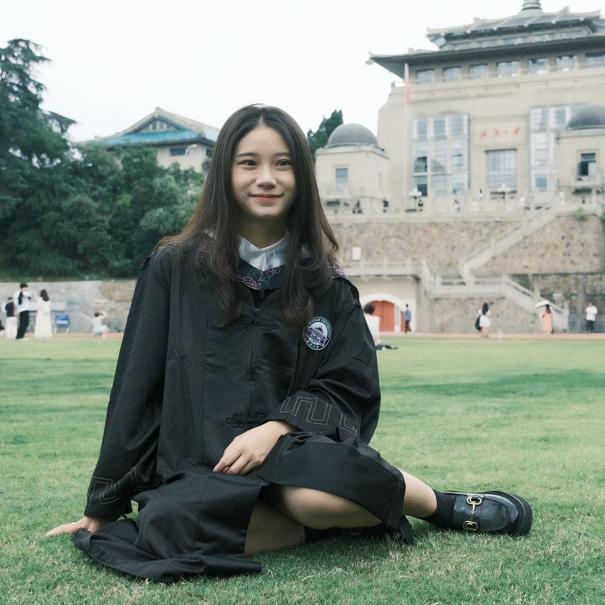

Hi there, I am Althea Lam!🙋
Currently I am on M.Eng program in Data Analytics in Cornell University, United States. Before this I completed my BSc in Wuhan University.
I prefer to seek NLP/Recommendation System Algorithm Engineer intern right now.
Cornell University, United States | Aug 2025 - May 2026
Wuhan University, China | Sep 2020 - June 2024
Location: Wuhan University, China
Description: The primary objective of this system is to accurately classify images of buildings into predefined categories. This can be particularly useful for applications such as urban planning, real estate analysis, and automated image tagging.
Description: Detailed description of the technologies, methods used, and achievements in this project.
Department: Supply Chain and Logistics - International Logistics Strategy - International Data Science
Position: Data Analyst
Duration: August 2024 - Now
Location: Shanghai, China
Department: Data
Position: Data Engineering
Duration: April 2024 - August 2024
Location: Shenzhen, China
Department: Marketing
Position: Data Science
Duration: June 2023 - August 2023
Location: Wuhan, China
You can reach me through the following methods: